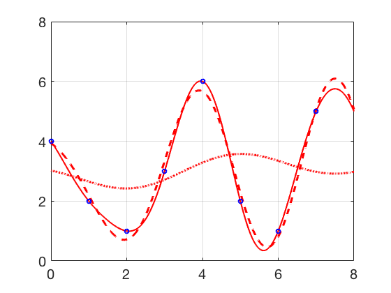

Additional Examples 11.1
1 Find the DCT of the data vector \(x\) and find the corresponding interpolating function \(P_4(t).\)
\begin{array}{ccccc}
t & 0&1&2&3\\
\hline
x&5&10&5&0
\end{array}
The Discrete Cosine Transform is
\begin{eqnarray*}
\left[\begin{array}{c}
y_0\\y_1\\y_2\\y_3
\end{array}\right] &=& Cx = \left[\begin{array}{rrrr}
a&a&a&a\\b&c&-c&-b\\a&-a&-a&a\\c&-b&b&-c
\end{array}\right]
\left[\begin{array}{r}
5\\10\\5\\0
\end{array}\right]=
\left[\begin{array}{c}
20a\\5b+5c\\-10a\\5c-5b
\end{array}\right]\\
&=&
\left[\begin{array}{l}
10\\5\frac{\sqrt{2+\sqrt{2}}+\sqrt{2-\sqrt{2}}}{2\sqrt{2}}\\-5\\5\frac{\sqrt{2-\sqrt{2}}-\sqrt{2+\sqrt{2}}}{2\sqrt{2}}
\end{array}\right] =
\left[\begin{array}{c}
10\\4.6194\\-5\\-1.9134
\end{array}\right]
\end{eqnarray*}
where \(a=1/2, b=\frac{\sqrt{2+\sqrt{2}}}{2\sqrt{2}},\) and \(c=\frac{\sqrt{2-\sqrt{2}}}{2\sqrt{2}}.\) According to Theorem 11.2,
the interpolating function is
\begin{eqnarray*}
p_4(t)&=& \frac{1}{2}y_0+\frac{\sqrt{2}}{2}\sum_{k=1}^3 y_k\cos \frac{k(2t+1)\pi}{8}\\
&=& 5+ \frac{\sqrt{2}}{2}\left[ 4.6194 \cos \frac{(2t+1)\pi}{8}-5\cos \frac{2(2t+1)\pi}{8} - 1.9134\cos \frac{3(2t+1)\pi}{8} \right]
\end{eqnarray*}
2 Plot the order 4, 6, and 8 DCT interpolating functions for the data
\begin{array}{ccccccccc}
t&0&1&2&3&4&5&6&7\\
x&4&2&1&3&6&2&1&5
\end{array}

The DCT of the data set is
\[y = Cx =
\left[\begin{array}{r}
8.4853\\
-0.6451\\
0.0000\\
0.8105\\
4.2426\\
-2.1129\\
0.0000\\
0.6801
\end{array}\right].
\]
Substituting into Theorem 11.2 yields the discrete cosine interpolating polynomial
\begin{eqnarray*}
P_8(t) &=& \frac{1}{\sqrt{8}}(8.4853)+\frac{1}{2}[
-0.6451\cos\frac{(2t+1)\pi}{16}+0.8105\cos\frac{3(2t+1)\pi}{16}\\
&+& 4.2426\cos\frac{4(2t+1)\pi}{16}-2.1129\cos\frac{5(2t+1)\pi}{16}+0.6801\cos\frac{7(2t+1)\pi}{16}]
\end{eqnarray*}
The interpolating function \(P_8(t)\) is plotted below with the data points as a solid curve, along with the least squares fits \(P_6(t) \) (dashed curve) and \(P_4(t)\) (dotted curve).
